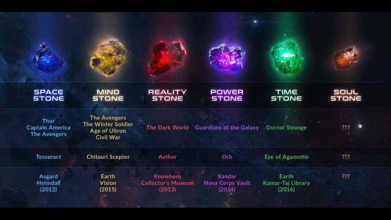
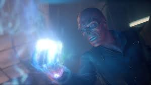
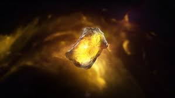
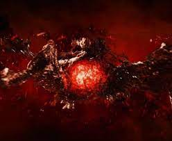
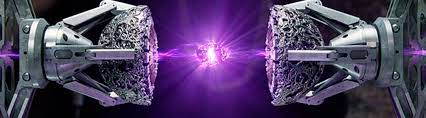
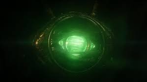

A manopla do infinito abriga as seis joias do infinito :


A Manopla do Infinito foi projetada para armazenar seis das 'joias da alma ", mais conhecidas como as Joias do Infinito. Quando usadas em conjunto, seus poderes já impressionantes fazem com que o usuário seja capaz de fazer qualquer coisa que ele desejar. Foi reunida pelo Titã louco Thanos, enquanto ele tomava as joias dos Anciões do Universo que originalmente as carregavam. Adam Warlock mais tarde obteve a manopla, mas o Tribunal Vivo declarou que as jóias eram muito perigosas para serem usadas juntas. No entanto, planos posteriores de Thanos eventualmente levou ao Tribunal Vivo rescindir esta restrição.
Algum tempo depois, o Sr. Fantástico revelou a seus companheiros do secreto grupo chamado de Illuminati que ele estava coletando as Joias do Infinito, e esperava recolher todos elas com a ajuda deles. Apesar de uma apreensão geral, o grupo conseguiu adquirir todas as seis joias. Ao fazê-lo, o Sr. Fantástico tentou desejar as Joias fora da existência, mas ele foi incapaz de fazer isso. Diante desta falha, e repreendido por Uatu, o Vigia, ele tomou a decisão controversa de dar a cada membro do Illuminati uma joia para esconder, para que elas nunca fossem reunidas e usadas novamente.
Depois do Cerco de Asgard, O Capuz tentou conseguir todas as Joias, começando pela Joia da Realidade do Himalaia (que foi mantido lá pelo Illuminati Raio Negro), a Joia do Poder do Edifício Baxter (mantida pelo Sr. Fantástico) e lutou contra o Hulk Vurmelho usando ela.O Hulk Vermelho avisou os Vingadores a respeito disso, e o Homem de Ferro conversou com os Illuminati sobre isso. O Capuz conseguiu obter as Joias do Espaço e do Tempo, enquanto ele perdeu a Joia do Poder nas mãos do Hulk Vermelho, Namor e Thor. Depois de tomar a Joia da Mente das ruínas da Mansão X, Capuz viajou para o Plano Astral, onde ele tentou obter a Joia da Alma, mas foi finalmente derrotado pelos Vingadores. O Homem de Ferro reuniu todas as seis joias e tornou-se o primeiro ser humano a possuir e usar a Manopla do Infinito, e ele transportou o Capuz de volta à Ilha Ryker e fingiu ter feito a Manopla desaparecer da existência, quando ele na verdade a transportou para o local de reunião dos Illuminati, onde ele dividiu as gemas entre seus companheiros de equipe novamente.
Quando os Illuminati enfrentaram a ameaça das Incursões, Terras de realidades alternativas colidindo com a deles com o resultado da extinção de ambas as realidades, os Illuminati novamente reuniram a Manopla do Infinito. Galactus, O Vigia e Thanos sentiram a reunião da manopla, e o Capitão América usou a Manopla para empurrar a outra Terra e prevenir a colisão. O custo disso no entanto, foi a destruição da Manopla e de todas as Joias, com exceção da Joia do Tempo.

Aprisionada no Tesseract, a Joia do Espaço foi trazida à Terra por Odin em 965. O Cubo ficou guardado em uma igreja de Nuremberg até 1942, quando o líder da HIDRA, o Caveira Vermelha, matou seu guardião e tomou posse do artefato.
Nas mãos do nazista, a Joia do Espaço serviu como fonte de energia para armamentos de ponta. Antes de cair no mar, o Tesseract transportou o Caveira para um lugar desconhecido durante confronto com o Capitão América. Encontrado por um submarino das Indústrias Stark, a gema passou décadas sob estudo, chegando até a influenciar no reator arc que viria a alimentar a armadura do Homem de Ferro. No começo dessa década, ele foi novamente utilizado como fonte de energia até ser roubado da SHIELD por Loki, que o usou para causar muita morte e destruição.
Após alguns confrontos com os Vingadores e o Thor, o Deus da Mentira chegou até a perder a posse da joia, mas ele a roubou de novo durante os eventos de Thor - Ragnarok.
Mas com Vingadores - Guerra Infinita, o Tesseract roubado pelo Thanos durante o ataque dele à nave onde estava a Jóia, Thor, Loki e toda a população de Asgard após o Ragnarok. O Tesseract foi destruído "libertando" assim a Jóia do Espaço, que agora está na posse de Thanos em sua Manopla do Infinito.

O Cetro era uma arma que utilizava a Joia da Mente amarela mantida dentro de uma cápsula azul, que também mascarava a presença da joia. Stark originalmente via a Joia como uma fonte de energia, entretanto, quando J.A.R.V.I.S. teve a oportunidade de estudar a joia, constatou que se parecia mais com um computador extremamente poderoso.
A joia já havia pertencido a Thanos, quando ele a entregou para Loki para auxiliá-lo em sua invasão a Terra. Essa joia possuía o poder de subjugar as mentes de outrem, curvando-os a vontade do usuário, além de projetar a consciência do usuário para outro plano de existência. Também se dizia que a joia era capaz de aumentar exponencialmente a inteligência daqueles capazes de utilizá-la, como mostrado nos casos de Loki e Wolfgang von Strucker.
Quando Loki falhou em sua campanha, o Cetro passou para as mãos da S.H.I.E.L.D., eventualmente sendo entregue à HIDRA através de agentes dormentes. O Cetro foi utilizado em diversos experimentos da HIDRA, e outras capacidades, como controle mental, projeção astral e energética, foram reveladas. A cápsula protetora da joia do Cetro foi eventualmente quebrada por Ultron e joia contida dentro dela foi utilizada para dar vida ao Visão. Thor confiou a joia a Visão, declarando que o Visão era digno e que segurança era difícil de se encontrar atualmente.
A joia da mente possui poderes psiônicos, concedendo ao seu portador variados poderes mentais. Ela tem como principal poder, o controle mental, conseguindo controlar diversos seres de uma vez só. O portador também pode se comunicar telepaticamente com outras mentes e disparar um poderoso feixe psiõnico da joia.

joia da realidade possuía a forma de uma substância viscosa vermelha e escura chamada Éter. O Éter havia pertencido aos Elfos Negros que queria usa-lo para espalhar as sombras por todos os Nove Reinos, mas foram detidos pelo pai de Odin, que pegou o Éter no fim da guerra e o deixou abandonado em uma caverna.
Anos após isso, Jane Foster acidentalmente foi teleportada para essa caverna, onde encontrou o Éter e ao se aproximar, a substância logo encontrou em contato com a moça, penetrando em seu corpo. Após Thor a reencontrar e ver que o Éter havia a deixado perigosa e fraca, ele a levou para Asgard para examina-la. Após Malekith tirar o Éter do corpo de Jane, Thor tentou destruí-lo, mas só conseguiu fragmenta-lo, que rapidamente se reconstituiu.
Quando Malekith absorveu o Éter, ele foi para a Terra para começar o seu plano, onde lutou contra Thor, que conseguiu vence-lo e conter o Éter. Quando os asgardianos tinham total tutela sobre o Éter, eles o levaram para Lugar Nenhum para entrega-lo ao Colecionador.
A joia da realidade é possivelmente a joia do infinito mais poderosa e perigosa, já que seus poderes concedem ao portador a capacidade de manipulação da realidade. Com domínio dessa joia, o portador pode manipular a realidade para realizar qualquer vontade, quebrando as leis da física e da natureza. A joia permite criar, destruir e alterar qualquer coisa ao seu redor, seja matéria, energia ou seres vivos.

A joia do poder fica localizada em um planeta remoto, dentro de um templo antigo, guardada dentro do Orbe, que foi pego por Peter Quill, que queria vende-lo em troca de bens materiais, mas quase foi pego pelos soldados de Ronan, mas Peter conseguiu fugir.
Ao chegar em Xandar, Peter foi atacado por Gamora, que também queria a joia para deixa-la longe de Thanos, até que os dois junto com Grott e Rocket começaram a brigar até todos serem presos. Após fugirem da prisão, eles foram entregar o Orbe ao colecionador em troca de suprimentos, mas a estagiária do próprio interferiu e segurou a joia após ser tirada do Orbe, o que resultou na destruição de todo o laboratório do Colecionador.
Certo tempo após isso, Ronan conseguiu a joia e a cravou em seu martelo, indo para Xandar para aniquilar o planeta. Ronan acabou sendo derrotado pelos Guardiões da Galáxia e perdendo a joia para os mesmos, que deixaram a joia do poder com na Sede da Tropa Nova.
A joia do poder tem como seu poder principal a manipulação de energia destrutiva, podendo gerar altíssimas quantidades de energia de coloração roxa. O portador da joia, possui poderes de gerar e controlar energia, podendo usa-la para destruir, quebrar, queimar ou até desintegrar o seu alvo, podendo aniquilar até mesmo um planeta inteiro com apenas um golpe. Além de seus poderes de energia, a joia também concede ao portador, maior intensidade aos seus atributos físicos, melhorando sua força, resistência, velocidade, reflexos e agilidade. A joia só deve ser portada por seres de grande força e poder, se não, irá destruir o portador imediatamente, mas aparentemente um grupo forte também pode dividir o poder da joia temporariamente.

A Jóia do Tempo permite ao portador total domínio do tempo: passado, presente e futuro. E também com treinamento suficiente no uso da joia, o tempo pode ser usado como uma arma, aprisionando inimigos ou mundos inteiros em infinitos ciclos de tempo. Ela também permite o portador avançar ou regredir o espaço-tempo de um objeto ou um ser vivo.
A Jóia do Tempo, diferentemente das outras, foi enviada originalmente para a Terra. O Mago Agamotto criou um invólucro em forma de cordão para conseguir utilizar as habilidades da pedra. Protegido por várias gerações de Magos, o amuleto nos foi apresentado em posse da Anciã. Em suas aulas no Kamar-Taj, o Doutor Estranho passou a usá-lo sem permissão. Com a morte da Anciã e a ameaça de Dormammu, ele se tornou o novo guardião do Olho de Agamotto
Em seu grande "teste", Strange utilizou a Jóia para voltar no tempo e prender Dormammu num loop temporal infinito. Com a dominância sobre o vilão, o Doutor Estranho o convence a desistir da Terra e ir embora.
Já em Vingadores - Guerra Infinita, o Doutor Estranho após uma batalha contra Thanos em Titan, ele acaba por entregar a Jóia do Tempo de bandeja ão Titã, mesmo após ao longo do filme ter jurado várias vezes que não entregaria a Jóia, com isso, Thanos se torna o atual portador da Jóia do Tempo.
A Joia da Alma é frequentemente vista como a Joia da Mente elevada a um nível estratosférico. Quem possui a Joia da Alma tem a habilidade de roubar, manipular e alterar as almas dos vivos e dos mortos. Dentro desse artefato, encontram-se almas coletadas de diferentes seres, aprisionados em um limbo perpétuo.
Essa Joia é diferente das outras até mesmo na forma de ser obtida. Apesar de estar escondida no planeta Vormir, para ter acesso a ela, é necessário fazer um sacrifício. Uma alma pela Joia da Alma, sacrificar aquilo que você mais ama. No caso de Thanos, ele teve que sacrificar a vida de Gamora.
Após Thanos conquistá-la, estas é a única Joia no qual o Titã não possuí familiaridade com seus poderes. Durante a Batalha de Titã, quando cercado pelas imagens de Doutor Estranho, Thanos ativou esta Joia e combinou seus poderes com a Joia do Poder para revelar o verdadeiro herói e destruir suas cópias, incluindo, embora que temporário, fazendo com que a forma astral de Strange saia de seu corpo.
Após a Manopla do Infinito ser completada, a Joia da Alma foi usada junto das outras cinco Joias do Infinito para erradicar metade da população do universo. A Joia da Alma possuí um universo de bolso, consistindo de águas e céu alaranjado, um lugar onde as almas dos mortos podem se comunicar.